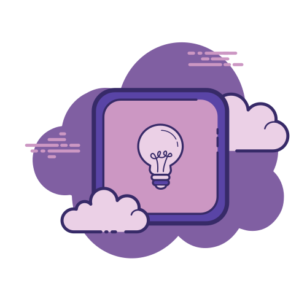

Seja Bem-vinde!
Vamos falar sobre UDI!

Gestão de Informações
Criaividade em Grupo
Interação Humano-Computador
Design Centrado no Ser Humano
Organização das ideias para tomadas de decisão e conhecimento.
Mapa mental é um diagrama confeccionado a partir de uma ideia central, que vai se ampliando em variados ramos. Cada uma dessas ramificações são desdobramentos do conceito inicial, como neurônios no cérebro. sistematizado pelo psicólogo inglês Tony Buzan, voltado para a gestão de informações, de conhecimento e de capital intelectual.
O mapa mental trabalha com comparações, síntese de informações e hierarquização. Essa metodologia pode facilitar o entendimento de informações complexas, fazendo com que os estudantes possam criar ou conectar ideias.
O brainstorming é uma técnica usada para levantar ideias de soluções de problemas. Ou, ainda, para criar coisas novas.
Regras básicas do Brainstorming:
Regra nº 1: gerar o máximo de ideias possíveis durante a sessão. ...
Regra nº 2: não é permitido criticar ideias. ...
Regra nº 3: ideias ousadas e ambiciosas são bem-vindas. ...
Regra nº4: As pessoas são encorajadas a construir a partir de outras ideias.
A interação humano-computador estuda a interação entre pessoas e computadores, as técnicas para tornar o sistema interativo e teorias, baseada no conhecimento da máquina e no conhecimento humano, a relação desses componentes é bem relevante, tendo em vista que os computadores têm ultilizaçãoes quase que infinitas existindo inumeradas possibilidades de “diálogo” entre o usuário e o computadores.

Conhecido também como Design Centrado no Ser Humano, baseado em conceitos de design, sendo plenamente adaptável a outras áreas, firmando-se em três pilares principais:
Colaboração entre as equipes internas:Empatia, que é a capacidade de se colocar no lugar do outro e entendê-lo melhor;
Experimentação, para testar as ideias sugeridas por meio de experiências e verificação geral de hipóteses.
O HCD é dividido em três etapas, fundamentais para um projeto: Hear- ouvir, Create- Criar e Deliver- Implementar.
É o termo utilizado para se referir ao processo de pensamento criativo e crítico, possibilitando a organização das ideias de modo a estimular tomadas de decisão e conhecimento. Design thinking é uma forma de abordagem, ele cria as condições necessárias para maximizar a geração de insights e a aplicação prática deles, a ideia é que o processo seja realizado de forma coletiva e colaborativa, de modo a reunir o máximo de perspectivas diferentes.
O design thinking possui quatro etapas sendo elas: Imersão, ideação, prototipação e desenvolvimento
Desenvolvido por Luiz Lima e Gabriele Batagiero, com a finalidade de desenvolver os estudos em "Usabilidade e Design de Interação"